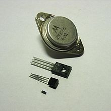
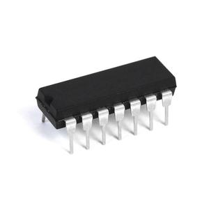
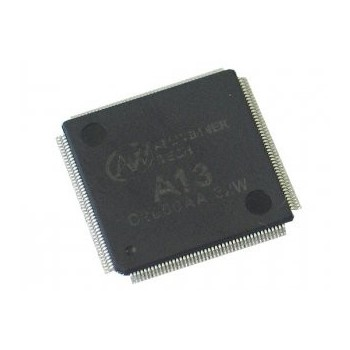
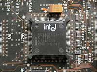
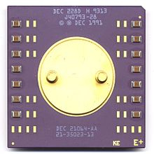
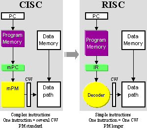

Processzor generációk
Tranzisztor
Úgy tartják, hogy az elso muködo tranzisztorpéldányt – pontérintkezos tranzisztort – a Bell Laboratóriumban hozták létre 1947 decemberében, bár a kutatások már az 1920-as évektol kezdve folytak több országban, az elektroncsöves trióda vagy vezérelheto dióda eloállítására. Az elso tranzisztoros eszközök, pl. tranzisztoros rádió, az 1950-es évek elején jelentek meg,[6] ekkorra sikerült megoldani a kezdeti minoségi problémákat és kialakítani a gyártási technológiát. A tranzisztor muködhet analóg üzemmódban, ekkor erosítoként használható, vagy kapcsoló üzemmódban, ami a digitális számítástechnikai felhasználást támogatja. A tranzisztorok számos típusa jelent meg, 1959-re[7] már készen állt a (fémoxid) szigeteloréteges térvezérlésu, azaz MOSFET tranzisztor. Az eszköz, mérete, áramfelvétele és ára miatt, hamar leváltotta az elektronikában korábban alkalmazott elektroncsöveket, és mára gyakorlatilag az összes elektronikai eszköz kulcsfontosságú aktív része. Többen a 20. század legfontosabb találmányának tartják.
A Bell továbbra is a tranzisztorkutatás élvonalában maradt, de a technológiát számos más cégnek is licencelte, hogy elkerülje az USA trösztellenes törvényeit. A gyártásban a Bell Laboratóriumot saját gyártó cége, a Western Electric képviselte, de a gyártásba rövidesen további negyven más cég is beszállt, ezek között volt a General Electric, RCA és Texas Instruments is.
Integrált Áramkör
1956-ban William Shockley megnyitotta a Shockley Semiconductor Laboratory félvezetotechnológiai céget, a Beckman Instruments egyik részlegeként. Shockley speciális diódákat akart gyártani, ami reményei szerint felülmúlta volna a tranzisztor jelentoségét. Eleinte a Bell Laboratóriumbeli volt munkatársait szerette volna a céghez csábítani, de senki sem állt kötélnek. Ekkor végzos egyetemistákat vett fel munkatársnak. 1957-ben, Shockley vezetési módszerei miatt, nyolc alkalmazott egyszerre felmondott, oket hívták késobb az "áruló nyolcaknak". A nyolc személy a következo volt: Julius Blank, Victor Grinich, Jean Hoerni, Eugene Kleiner, Jay Last, Gordon Moore, Robert Noyce és Sheldon Roberts. Ez a nyolc személy a Fairchild Camera and Instrument-hez, egy jelentos, hadiipari kapcsolatokkal rendelkezo céghez fordult, hogy az anyagilag támogassa saját terveik megvalósítását.[9] 1957-ben megalakult a Fairchild Semiconductor, a Fairchild Camera and Instrument félvezetogyártó részlege. Ez a cég úttöro szerepet játszott a tranzisztorok és integrált áramkörök gyártásában: szilíciumalapú tranzisztorokat fejlesztettek ki, mikor a legelterjedtebb félvezeto anyag a germánium volt. A Fairchild 1958-ban kezdte gyártani a Moore által kifejlesztett sikeres 2N697 tranzisztort,[10] amit elsosorban bombázók fedélzeti számítógépeiben és rakéták navigációs rendszereiben alkalmaztak. Ugyanekkor Jean Hoerni kifejlesztette a planár eljárást, amely növelte a tranzisztorok megbízhatóságát, teljesítményét, egyszerubbé és olcsóbbá tette a gyártási folyamatot; ez szintén nagy üzleti siker lett.
Az elso germániumalapú integrált áramkört Jack Kilby, a Texas Instruments fizikusa mutatta be 1958. szeptember 12-én, amelyre amerikai szabadalmat kapott,[11] a cég pedig forgalmazni kezdte az ezzel a technológiával készült eszközöket: 1961-ben az USA légiereje számára gyártották az elso IC-alapú számítógépet, valamint további integrált áramköröket a Minuteman rakéta vezérlorendszerébe 1962-ben. Kilby 2000-ben fizikai Nobel-díjat kapott az integrált áramkör kifejlesztésében végzett tevékenységéért.
Fél évvel késobb Robert Noyce a Fairchild Semiconductornál saját elképzelései alapján olyan szilíciumalapú integrált áramkört fejlesztett, ami a Kilby-féle technológia több problémáját megoldotta (stabilitás, germániumkristályok lebomlása hohatásra, a szilíciumhoz képest magas ár, vezetési tulajdonságok). 1960-ban a Fairchild elkészített egy szilíciumlapkán kialakított négy tranzisztorból álló áramkört, ezzel megalkotta az elso szilíciumalapú integrált áramkört. Az elso integrált áramkörök csak néhány tranzisztort tartalmaztak és egyszerubb áramköröket valósítottak meg, mint pl. flip-flop vagy logikai kapuk. A fejlodés a méretcsökkenés, azaz a nagyobb integrációs fokozatok felé tartott: az elso IC-k az SSI (small-scale integration, alacsony integráltságú) kategóriába tartoztak, késobb megjelent az MSI (medium-scale integration, közepes), LSI (large scale integration, nagy), VLSI (very-large-scale integration, nagyon nagy), sot ULSI (ultra-large-scale integration, ultranagy integráltságú) kategória. Az SSI IC-ket megjelenésük idején szinte azonnal urhajózási és repülési feladatokban kezdték alkalmazni, és ezek a projektek elosegítették a technológia fejlodését. Mind a Minuteman rakéta, mind az Apollo-program könnyu és kicsi digitális számítógépeket igényelt az inerciális vezérlorendszereihez. Az Apollo Guidance Computer (1961–1975) nagy mértékben motiválta a az integrált áramkörös technológiát, a tömegtermelés igényével a rakéta navigációs rendszere lépett fel. (D-17B a Minuteman I NS-1OQ rakétavezérlo rendszer számítógépkomponense, 28 kg, tranzisztor-dióda logikával készült, 1962, D-37C: NS-17 MGS számítógépe, Minuteman II rakétában, SSI IC-kkel, 13.15 kg, 1964.) 1968-ban Gordon Moore, Robert Noyce és Andrew Grove kiléptek a Fairchild semiconductors cégbol és közösen megalapították saját cégüket, Integrated Electronics néven, ami nem más, mint az Intel. 1968-ban szintén a Fairchild-nál dolgozó Federico Faggin olasz származású fizikus fejlesztette ki az önilleszto szilíciumkapus IC technológiát, amely a modern CMOS-alapú számítógépes csipek alapját képezi: ez teszi lehetové a dinamikus RAM-ok, a nem felejto memóriák, CCD képérzékelok és a mikroprocesszorok muködését. Faggin 1970-ben az Intel-hez csatlakozott, ahol az „elso”[14] egycsipes integrált áramkörös mikroprocesszor, az Intel 4004-es CPU fejlesztésében vett részt.
Mikroprocesszor
Az elso mikroprocesszorok fejlesztését már az 1960-as években megkezdték számos cégnél, nem is tudva arról, hogy más cégek is foglalkoznak ezzel. Az elso eredmények – muködo mikroprocesszorok – 1970-ben jelentek meg, megelozve a hagyományosan „elsoknek” tekintett Texas Instruments TMS 1000 és Intel 4004 csipeket. A Garrett AiResearch cégnél 1968-ban kezdték a Central Air Data Computer (CADC) elnevezésu célszámítógép tervezését, amely egyes vadászgépek, például az F-14-es, korábbi elektromechanikus fedélzeti számítógépeket volt hivatott felváltani. A fejlesztés 1970 júniusában lezárult, és elkészült az MP944-es csipkészlet, egy egyedi tervezésu, nagy integráltságú (LSI), MOS-alapú mikroprocesszor-csipkészlet, amely megelozte az elso mikroprocesszorok megjelenését, és képességeiben messze felülmúlta azokat. A csipekben 20 bites, fixpontos törtrészeket használó kettes komplemens számábrázolást alkalmaztak, 28 csip alkotott egy teljes fedélzeti számítógépet. A Four-Phase Systems amerikai számítógépgyártó cég 1969-ben kezdett fejlesztésének eredménye volt az AL1 jelu 8 bites bitszelet-processzor, amellyel 24 bites processzort építettek. Az AL1 8 regisztert és egy ALU-t tartalmazott. A csipkészlethez tartozó 9 csippel teljes számítógép készült, amely 32 terminált szolgált ki. A processzort 1970 áprilisában mutatták be a Computer Design magazin cikkében. Az AL1 önmagában is teljes értéku processzor volt, amint azt tervezoje, Lee Boysel a Texas Instruments által ellene indított szabadalomsértési perben demonstrálta az 1990-es években. 1971-ben a Pico Electronics (Glenrothes, Skócia) és a General Instrument (GI) bemutatták közös integrált áramkörfejlesztésük eredményét, egy kész egycsipes kalkulátor IC-t, amely gyakorlatilag az elso olyan mikroprocesszor vagy mikrovezérlo, amely ROM-ot, RAM-ot és RISC utasításkészletet tartalmaz egy csipen. A processzor 8 bites, PMOS technológiával és maszkolt programozással készült, a rétegek levilágító fóliáit kézzel rajzolták. A processzor Angliában 1971 márciusában, az USA-ban 1971 júliusában kapott szabadalmat.[32] A Pico és GI továbbra is együttmuködött az integrált áramkör-tervezésben. A GI továbbfejlesztett mikroprocesszorai a CP1600, IOB1680 és PIC1650 termékekben jelentek meg. 1987-ben a GI leválasztotta a mikroelektronikai üzletágat és létrehozta a Microchip Technology céget, amely a PIC mikrovezérloket gyártja. A Texas Instruments 1971. szeptember 17-én mutatta be a TMS 1000-es sorozat elso tagját, a TMS1802NC jelu csipet, amely egy teljes számológép-alkalmazást tartalmazó 4 bites maszkprogramozott mikrovezérlo.[33][34] Ez volt az elso egycsipes, kereskedelmi forgalomban kapható mikrovezérlo. A sorozathoz tartozó mikrovezérloket számtalan alkalmazásban használták fel, pl. ellenorzo- és irányítórendszerekben, háztartási gépekben és játékokban. Az Intel céget 1969-ben megkereste a japán Busicom egy nagy teljesítményu asztali számológép csipkészletének elkészítése céljából. A Busicom eredeti terveiben 7 csip szerepelt, az Intel mérnökei egy 4 csipes megoldást javasoltak. Az Intel 1971-ben megbízta Federico Faggint, egy olasz származású mérnököt a projekt vezetésével. Faggin Sima Maszatosi, a Busicom mérnökének segítségével végül sikeresen lezárta a projektet, amelynek eredménye az Intel MCS-4 csipkészlete, benne a 4004 jelu 4 bites mikroprocesszorral. A Busicom felé 1971 márciusában kezdték meg a szállítást. A processzorról szóló elso publikáció 1971. november 15-én jelent meg az Electronic News folyóiratban. A 4004-es processzor licencét az Intel nem adta át a Busicomnak, így azt más felhasználók felé is forgalmazhatta. Ezt a processzort tekintik az elso kereskedelmi forgalomban megjelent mikroprocesszornak, és ez volt a kezdete az Intel további mikroprocesszoros fejlesztéseinek.
1-2-3-4 és további bitek
A bitszámot a processzor regiszterei és adatsíne határozza meg. Ettol eltéro méretu lehet a címsín, mivel az adatbitek és a címbitek száma nem kötelezoen egyforma, különösen a nem Neumann-elvu, pl. a Harvard architektúrájú gépekben. A bitek száma a regiszterekben a fejlodés során egyre nott, de ezt nem szabad egyszeru számtani sorozatként elképzelni, mivel a bitszélességet gyakorlati igények és lehetoségek határozták meg, tehát egyszerre jelen volt a gyakorlatban sok különbözo bitméret. Például a MP944 csipkészlet, amelynek tervezése 1968-ban kezdodött és 1970-ben helyezték üzembe vadászrepülogépek fedélzeti számítógépeiben (CADC), 20 bites adatszélességu processzort tartalmaz, az 1966-os Apollo Guidance Computer 16 bites (14 bites adat, túlcsordulás és paritásbitekkel), miközben a TMS 1000 és az Intel 4004 ugyanebben az idoben mindössze 4 bites processzorok, mivel számológépek, nem pedig vadászgépek és urhajók – muködtetésére szolgálnak. A bitszámot tehát foleg a feladat határozza meg, amire a csipet szánják, de hatással van erre az adott idoben meglévo nagygépes rendszerek állapota: 16 bites rendszerek már 1951-ben megjelentek (MIT Whirlwind) és 1965-ben már elterjedtek voltak (pl. IBM 1130, HP 2100 sorozat). A bitszám csak egy jellemzo, és nem a fejlodés határozza meg. Alapjában 2 bites rendszer volt az 1974-ben megjelent Intel 3000-es csipkészlet, ami nagyobb bitszélességu rendszerek építésére volt alkalmas. A mai napig léteznek 1 bites processzorok, ezeket irányítástechnikai célokra használják (Motorola MC14500B).
4 bites rendszerek
1971: TMS 1000, Intel 4004, AMD Am2900 áramkörcsalád (1975), + további bitszelet technikát támogató csipek.
8 bites rendszerek
8 bites rendszereken a processzor tipikusan 8 bites regiszterekkel dolgozik, de a memória címzése általában 16 bites, így ezek a rendszerek tipikusan. 65536 byte memóriát képesek kezelni. Elso változatai a technológiának a 70-es évek legvégén, és a 80-as években terjedtek el személyi számítógépekben, második és harmadik generációs játékkonzolokban és ipari berendezésekben. Az elso olcsó 8 bites mikroprocesszoroknak köszönheto a „mikroszámítógépek forradalma”, azaz a személyi számítógépek világméretu elterjedése. A mai napig gyártanak 8 bites mikroprocesszorokat, ezeket leginkább mikrovezérlokben alkalmazzák. Az elso kereskedelmi forgalomba hozott 8 bites mikroprocesszor az 1972 áprilisában megjelent Intel 8008 volt, eredeti nevén a 1201-es csip. A csip fejlesztése párhuzamosan futott a 4004-es processzoréval, 8 bites adatregiszterei és 14 bites cím- és stackregiszterei vannak, a címezheto memória mérete 214 × 8 bites cella, azaz 16 KiB. Ezt az Intel a Computer Terminal Corporation (CTC) cég megrendelésére készítette a Datapoint 2200 programozható terminálhoz, amelybe végül nem került bele: a csip nem teljesítette a CTC muszaki elvárásait és az eloírt határidot, így a terminál végül TTL áramkörökkel készült el. A szerzodés lehetové tette az Intel számára a csip forgalmazását más ügyfelek számára, ezért az Intel 8008 néven forgalmazni kezdte, 120 dolláros áron. Ezzel a processzorral készült el 1972–1973-ban a világ elso személyi számítógépe, a „Sac State 8008” a kaliforniai Sacramento Egyetemen. A gépnek 8 KiB memóriája volt, két bankra osztva (ROM és RAM), egyszeru diszkes operációs rendszere, soros vonala, audio- és lyukszalagolvasója, színes kijelzoje, billentyuzete és nyomtatója.[37][38] A processzorhoz az Intel az MCS-8 fejlesztokészletet forgalmazta 1972-tol. Az Intel következo 8 bites processzora 1974 áprilisában jelent meg, ez volt az Intel 8080-as mikroprocesszor,[39] amelyben javították a 8008-as hibáit és jelentos bovítéseket kapott: 16 bitre kiterjesztett címsínt, mellyel 64 KiB memória címezheto, és bovített utasításkészletet, amelyben megjelentek a 16 bites adatokkal dolgozó utasítások. Elodjével sem bájtkód, sem forráskód szinten nem kompatibilis. Késobbi változata az 1977-es Intel 8085, amely teljesen kompatibilis elodjével. Számos nagy gyártó épített terminálokat ezzel a processzorral. Erre épült a S-100 sín, a korabeli mikroszámítógépek elso szabványos sínrendszere, és eredetileg erre a processzorra készült a Gary Kildall által kifejlesztett CP/M operációs rendszer is. A processzor népszeru lett a hobbiszámítógép-építok körében, például az Altair 8800, IMSAI 8080 személyi számítógépek épültek rá. Más cégek is licencelték, így világszerte gyártották változatait, pl. az AMD, NEC, OKI, Siemens, Mitsubishi, Toshiba és klónjait a KGST országaiban is gyártották. Közvetlen hatással volt az Intel x86-os architektúrájára, mivel az Intel 8086-os processzort kezdetben forráskód szintjén kompatibilisnek tervezték a 8085-össel. A Motorola cég ugyancsak 1974-ben kezdte meg a 6800-as processzorok gyártását, amelynek architektúrája a PDP–11-es miniszámítógépre hasonlít. Ezzel az Intel 8080-as processzorával akartak konkurálni. 1975-ben jelent meg a 6800-as konkurense, a MOS Technology 6501 és 6502 csipje, amit a Motorolától kilépett Chuck Peddle, Rod Orgill és Wil Mathys terveztek. A 6502-es processzor legismertebb alkalmazása az Apple I és II számítógép, de számos más mikrogépben (Commodore VIC20), játékkonzolban (Nintendo NES) és perifériában is alkalmazták. Federico Faggin, a 4004, 4040 és 8080-as processzorok vezeto tervezoje 1974-ben kilépett az Inteltol és létrehozta a Zilog céget, amihez a következo évben csatlakozott Sima Maszatosi, a 8080-as másik tervezoje. 1976-ban a Zilog bemutatta a Z80-as processzort, ami a 8080-as továbbfejlesztett változata. A Z80-as processzor a világ egyik legelterjedtebb mikroprocesszora, változatait még ma (2018-ban) is gyártják.
Idovonal
- 1972: Intel 8008
- 1974: Intel 8080, Intel 8085, Motorola 6800
- 1975: MOS Technology 6501 és 6502, Fairchild F8, Signetics 2650
- 1976: Zilog Z80, RCA 1802
- 1976-tól: Microchip PIC
- 1996: Atmel AVR
- 2005: Infineon XC800 mikrovezérlo család
12 bites rendszerek
Ez a második generációs mikroprocesszorok egy kis csoportja. Az 1975-ben megjelent Intersil 6100 család egy 12 bites mikroprocesszorból (6100) és egy periféria-támogató és memória IC-bol állt. A processzor már CMOS technológiával készült és a (12 bites) DEC PDP-8 miniszámítógép utasításkészletét hajtotta végre, emiatt CMOS-PDP8-nak is nevezték. A Harris Corporation is gyártotta, Harris HM-6100 jelöléssel. A DEC az 1970-es évek második felében forgalomba hozta DECmate számítógépsorozatát, amelyet eleinte 6100-as és Harris 6120-as processzorral gyártottak; ezt az IBM PC megjelenése szorította ki a piacról. Technológiája és az ezzel járó elonyök miatt a 6100-at az 1980-as évek elejéig katonai eszközben is felhasználták. A Toshiba TLCS-12 jelu processzora szintén 12 bites.[40] Ezt a processzort 1973-tól kezdték fejleszteni a Ford Motor Company számára és körülbelül 1974/1975-ben jelent meg (alkalmazási tesztek és gyakorlati felhasználás 1976-ban). A 12 bites architektúra kompromisszum eredménye: 8 bit nem volt elég a motorvezérlo alkalmazás számára, de a 16 bit túl nagy áramköri méretet eredményezett volna. A TLCS-12A sorozat volt a Toshiba elso mikrovezérlo-sorozata. Ez a gyakorlatban egy csipkészletet jelentett, a processzor a T3190 jelu csip.[41] Ezután a Toshiba gyorsan áttért a 8 bites Z80 alapú mikrovezérlokre.
16 bites rendszerek
16 bites rendszerek esetén a processzor 16 bites regiszterekkel, és ilyen szélességu memóriamuveletekkel dolgozik, ám a memória címzése általában több regiszter segítségével történik, így jóval több memória érheto el, mint 2^16. (korai x86-os platformokon például 640 kbyte). Lényeges változást a 8 bites rendszerekhez képest nem hozott. Példák: Intel 8086, Intel 8088 (amely rendszeren a processzor képességei megegyeznek a 8086-tal, de kívülrol az elodokkel egyeznek meg a régebbi hardveres megoldások támogatása végett). Intel 80286, NEC V20, PDP-11. Lásd még: 16 bites architektúra, Atari Az elso 16 bites mikroprocesszor a National Semiconductor IMP-16 jelu többcsipes processzora volt, 1973-ban. Ez egy bitszelet-technikával felépült processzor volt, amely 700 kHz körüli órajelen muködött.[42] Utasításkészlete CISC típusú, a Data General Nova minigép utasításkészletéhez hasonlít. Az elso egycsipes kereskedelmi célú 16 bites mikroprocesszor a National Semiconductor PACE (Processing And Control Element) csipje volt, 1974 végén.[43] Sebessége elmaradt az ugyanebben az idoben megjelent 8 bites processzorokétól (Intel 8080, Motorola 6800, MOS 6502). Ezt 1975-ben a National Semiconductor INS8900 processzora követte, amely NMOS technológiával készült. Órajele 2 MHz, sebessége 117 600 utasítás másodpercenként (IPS), ami továbbra is a konkurens 8 bites processzorok sebessége alatt maradt.[44] Ugyancsak 1975-ben jelent meg a Western Digital MCP–1600 többcsipes 16 bites processzora, amely a PDP-11 utasításkészletét implementálta.[45][46] Ez már valamivel sikeresebb volt, mivel több minigépben is felhasználták, pl. az Alpha Microsystems AM-100, DEC LSI-11 gépek processzoraként. A processzor órajele 3,3 MHz, mikroprogramozott CISC, ám belsoleg 8 bites, amely emulálja a 16 bites utasításokat! Ezt a processzort már a Szovjetunióban is lemásolták és széles körben alkalmazták (??581 sorozat); ennek kedvezett az a szovjet pártdirektíva, amely elonyben részesítette a PDP-11 architektúra alkalmazását a számítástechnikában.[47] 1975-ben más cégek is eloálltak 16 bites processzorokkal: ekkor jelent meg a HP BPC, egy hibrid 16 bites processzor-csipkészlet, amit asztali kalkulátorokban és munkaállomásokban alkalmaztak. 1976 júliusában jelent meg a Texas Instruments TMS9900 processzora, amely valódi 16 bites, egycsipes processzor, amely a TI 990 miniszámítógép architektúráját valósította meg egy csipben és a TI-99/4 és TI-99/4A otthoni számítógépekben alkalmaztak. Hát, nem ez indította el a mikrogépek forradalmát. További 16 bites processzorok: Intel 8086 1978-ban, Intel 8088, Intel 80286, WDC 65C816, Zilog Z8000. A nagy sikeru Motorola 68000 1979-ben jelent meg, ez már átmenetet képez a 32 bites rendszerek felé, mivel regiszterei és utasításkészlete 32 bites, de külso adatsíne és ALU-ja 16 bites. Az Intel és a Motorola processzorai igen sikeresek voltak, szinte a teljes termelést a PC iparágban használták fel.
32 bites rendszerek
A 32 bites rendszereken 32 bit széles regiszterekkel dolgozhatunk, és közvetlenül 32 biten címezhetjük meg a memóriát. Ez kohézív módon 4 GiB memória elérését teszi lehetové, amely megnyitotta az utat ahhoz, hogy a szoftverek, fordítóprogramok, és operációs rendszerek (például Windows, Linux, Android) a mai formájukban kialakuljanak. Több gyártó is a 32 bites rendszerek felé fordult az 1970-es évek közepétol kezdve, miközben a 32 bites rendszerek már elterjedtek voltak a kis- és nagyszámítógépek körében: ilyen az 1964 áprilisában megjelent IBM System/360 sorozat, az 1970-es IBM System/370 (sokkártyás processzorok), a DEC 1977-ben induló VAX sorozata, amelynek modelljei TTL csipes, sokcsipes VLSI, bitszelet-processzoros felépítéssel készültek, végül 1985-ben készült el a VAX ISA elso mikroprocesszoros megvalósítása, a MicroVAX 78032. A Motorola viszonylag késon kapcsolódott be a 16 bites eszközök versenyébe, ami bizonyos elonyt is jelentett: rögtön fejlettebb technikát alkalmazhatott a fejlesztésnél. Új, versenyképes termékük fejélesztésénél a 16 bites lépést átugrották, a visszafelé-kompatibilitást elvetették: az „elore való kompatibilitást” célozták meg, így a 68000-es processzor belso felépítése már 32 bites, 32 bites címregisztereit eleinte 24 bitre korlátozták, adat- és címsínjei viszont 16 bitesek maradtak. A 68000-es processzort 1979 szeptemberében mutatták be, forgalomba 1980-ban került. Ezt a processzort 16 bites vonásai miatt nem tekintik teljesen 32 bites rendszernek, 16/32 bitesként hivatkoznak rá. A világ elso 32 bites mikroprocesszora a Bell Laboratóriumok által 1980-ban kifejlesztett CISC típusú Bellmac 32 volt. A Bell Laboratóriumok ezelott fejlesztett már mikroprocesszorokat, de azok 8 és 4 bites processzorok voltak. A fejlesztési tervben átugrották a 16 bites fokozatot, és rögtön a következo lépcsofokra léptek. A processzor tervezésekor nem használtak digitális tervezorendszert, a rajzokat kézzel gyártották, és a teljes tervet egy nagy terem padlóján állították össze. Az elkészült processzor a tervezettnél gyorsabb lett, 9 MHz-es órajelen is muködhetett. Késobb a Western Electric tulajdonába került, a WE 32000-es sorozatban forgalmazták. Nagy üzleti sikereket nem ért el. 1980 és 1984 között folyt az amerikai Berkeley egyetemen David Patterson híres RISC projektje, amelynek elso szilíciumon megvalósított eredménye a RISC I-ként ismert csip, amit az ACM ISCA szimpóziumán publikálták 1981-ben.[48] Ebbol a tervezetbol származik maga a RISC – redukált utasításkészletu számítástechnika – kifejezés, és innen származnak a SPARC processzorok, ez ihlette az egész ARM architektúrát és elemeit felhasználták olyan termékekben, mint az AMD Am29000 és az Intel i960 processzorcsaládok. Az ARM processzor tervezése 1983-ban kezdodött, tervezoje Sophie Wilson volt, akit nagyban inspiráltak a Berkeley RISC processzorról megjelent cikkek és a MOS 6502 processzor. Az elso ARM processzormodell, az ARM1-es, 1985-ben jelent meg.[49] A Berkeleytol nem messze fekvo Stanford Egyetemen ezzel párhuzamosan folyt a MIPS architektúra fejlesztése,[50] amelynek elso példánya az 1986 januárjában bemutatott R2000-es processzor volt. Érdekes az Intel helyzete a 32 bites processzorok versenyében. Az Intel már 1975 óta fejlesztette saját 32 bites iAPX 432-es processzorát, amelyben a magas rendu programnyelvek támogatását, objektumorientáltságot és sok egyéb élenjáró technikát szándékoztak megvalósítani. A processzor el is készült, elso – többcsipes felépítésu – változata 1981-ben jelent meg és 1985-ig folytatódott a fejlesztése. A processzor nem került a cég fo termékvonalába, lassúsága és túlzott bonyolultsága miatt, és a cégen belül fokozatosan az x86-os architektúra fejlesztése vette át a hangsúlyt. Az elso üzletileg sikeres és a piacon elterjedt 32 bites processzor az 1985-ben megjelent Intel 80386 volt, amelynek utasításkészlete jobbára visszafelé kompatibilis a korábbi 16 bites operációs rendszerekkel is (hasonlóan az összes késobbi x86 processzorhoz), de már képes 32 bites muködésre. Ezt x86-os processzorokon egy védett mód bevezetésével érik el, amely a folyamatok memóriaterületeinek egymástól való elkülönítését is biztosítja. A késobbi 32 bites x86-os processzorok mind visszafele kompatibilisek a 386-ossal, tehát a 386-os utasításkészletére épülo szoftverek (az operációs rendszereket is beleértve) változtatás nélkül futnak 486-os, Pentium, vagy késobbi processzorokon is. x86-os platformon az elso igazán elterjedt 32 bites operációs rendszer a Windows 95 volt. Késobb az ARM architektúra lett a domináns 32 bites platform. Az ARM v3 generációtól kezdve egészen a 2010-es évek végéig 32 bites chipekkel dominálják a mobiltelefonok, tabletek, beágyazott rendszerek piacát, de-facto hardveres standardot nyújtva az Android operációs rendszer számára. Egy ideig beágyazott rendszerekben elterjedtek voltak még a MIPS architektúrájú processzorok is. 32 bites x86, MIPS és ARM processzorok különféle variációit számos gyártó gyártotta, az Intel mellett az AMD, a VIA, a Cyrix, a Qualcomm, az Imagination Technologies, a Samsung, az nVidia, az ULI, a Harris, a Transmeta, az AMLogic, a DM&P, a Freescale, a Marvell, a Mediatek, a Broadcom, a Huawei, a Rockchip, a Panasonic, a Longson, az Elbrus, vagy a Zhaoxin.
64 bites rendszerek
Mivel 32 biten praktikusan maximum 232 (4 GiB) memória címezheto meg egyszeruen, ezért ezt elérve megjelent az igény a 64 bites architektúra kialakítására, amelyre eloször a szerverek piacán került sor. Egy 64 bites regiszter 264 (16 exibájt, több mint 18 kvintillió, avagy 1.8×1019) különbözo értéket tárolhat. Nagygépekben és szuperszámítógépekben korábban is használták ezt az adatméretet (pl. az 1961-es IBM 7030 Stretch korai szuperszámítógép adatszava, vagy az 1976-os Cray–1-ben), késobb szerverekben, és fogyasztói elektronikai eszközökben is megkezdodött az alkalmazása. Az Intel 1989-ben mutatta be a 64 bites rendszerekbe átmenetet képezo, „64 bites”-nek reklámozott, ám alapjában véve 32 bites mikroprocesszorát, az i860-ast. A processzor általános regiszterei 32 bitesek, lebegopontos regiszterei 64 bitesek, sínjei 64 és 128 bitesek (pl. a belso memóriasín a gyorsítótárhoz), RISC architektúrájú VLIW processzor. A processzorhoz nehéz volt hatékony fordítóprogramot készíteni, ez limitálta a felhasználását. Nem ért el üzleti sikereket és az 1990-es évek közepén beszüntették a gyártását. Az Intel végül az 1990-es évek végén minden RISC architektúrán alapuló fejlesztését ARM alapokra helyezte (XScale processzorok). A MIPS Computer Systems 1991. október 1-én mutatta be hivatalosan elso 64 bites RISC processzorát, az R4000-est. Ez a MIPS utasításkészlet harmadik revízióját implementálja. Ezek a processzorok a szerver- és munkaállomás-piacon találták meg alkalmazásukat. A DEC 64 bites Alpha architektúrájába tartozó elso modell az Alpha 21064 processzor volt, amely 1992 novemberében jelent meg. Órajele maximálisan 192 MHz volt. Az Alpha architektúra CISC típusú, megjelenésekor sebessége mégis meghaladta a konkurens RISC modellekét és sokáig az Alpha processzorok voltak a világ leggyorsabb mikroprocesszorai. A Sun SPARC architektúra a Berkeley RISC elveken alapul. A Sun már 1993-ban kifejlesztette utasításkészlet-architektúrájának 64 bites változatát, a SPARC V9 ISA-t, amelynek elso megvalósítása az 1995-ös UltraSPARC processzor. A SPARC processzorokat foleg kiszolgálókban alkalmazzák, de léteznek SPARC processzoros munkaállomások is. Az egyik elso (2001), köztudatban is ismert 64 bites szerver architektúra az Intel Itanium processzorcsaládja, amely egy VLIW koncepción alapuló processzor. Az Intel eloször a szerverpiacra szánta, késobb pedig az x86 architektúrát szerette volna felváltani vele. A processzor sosem terjedt el, mert a fordítóprogramok nem voltak elég fejlettek. Az Intel néhány generáció után megszüntette a fejlesztését. Helyette az AMD által kifejlesztett x86-64 (AMD64, hibásan: x64) architektúra terjedt el az asztali számítógépek piacán, amely az x86 utasításkészlet továbbfejlesztett változata (visszafelé kompatibilis az x86 alapú szoftverekkel). Az ARM processzorok elso elterjedt 64 bites processzorcsaládja az ARM v8, amelyet elsosorban felsokategóriás mobiltelefonokban, phabletekben, tabletekben, és játékkonzolokban használnak. Ez 2011-ben jelent meg, szintén visszafelé kompatibilis a 32 bites ARM architektúrára írt szoftverekkel (rendszerszinten viszont nem kompatibilis a korábbi ARM utasításkészlettel).
CISC
A CISC (complex instruction set) jelentése: összetett utasításkészlet. Ennek lényege, hogy a processzorban olyan utasításkészletet hoztak létre, amelynek mind leírása és muködése komplex és összetett. A CISC utasításkészletu processzorokban az utasítások hossza változó, maga az utasítás bájtkódja prefixeket és különféle speciális jelzoket tartalmazhat, magában foglalhatja különféle címzési és veremkezelési módszerek támogatását, és magát az utasítás egészét a különféle paraméterekkel. Ilyen elven muködik az x86, és korábban ilyen elven muködött még a Z80 és az i8080/8085 is.
RISC
A RISC Reduced Instruction Set Computing processzortervezési koncepció lényege az, hogy bonyolult utasítások helyett a processzor utasításkészletét egyszeru utasítások alkotják, amelyek lehetové teszik akár a könnyebben párhuzamosítható utasításvégrehajtást is, miközben az egyszeru utasításkészlet miatt kisebb bonyolultságú processzorokat eredményeznek. Ismert RISC processzorok a MIPS, az IBM Power/PowerPC családja, SPARC (Sun, Oracle, szerverekben), a DEC (megszunt Alpha) és az ARM. A ma eladott processzorok 95%-a ARM utasításkészletu.
CACHE Memória
A rendszermemória (RAM) elérése egy bonyolult sínrendszeren keresztül történik, hogy ezt ne kelljen gyakran (minden memóriamuvelet esetén) megtenni, a számítógépek elkezdtek úgynevezett cache memóriát használni, ami egy kis méretu integrált memória (gyorsítótár) a rendszermemória és a processzor végrehajtóegységei között. Ez jelentosen megnöveli a végrehajtás sebességét. Kezdetben alaplapra integrálták, késobb a processzorba került (Intel Pentium). Általában kettohatvány a méretük (van kivétel is). L1 cache néven szokás emlegetni az utasításokat és a dekódolt utasításokat átmenetileg tároló cache memóriát. L2 cache néven szokás nevezni az általános célú memóriaírásokat és olvasásokat gyorsító cache memóriát (ez lassabb, mint az L1). A mai processzorokban néha L3 cache is van, amely lassabb ugyan, mint az L2 cache, de a RAM elérésénél valamivel gyorsabb. A modern szuperskalár processzorok már azelott detektálják a lehetséges memóriamuveleteket (prefetch) hogy azok végrehajtásra kerülnének. Ezzel a módszerrel a memóriaolvasás az eredmény betöltését a cache memóriába idejekorán elkezdi, hogy amikor az értékre szükség lesz, akkorra már elérhetové váljon, és ne kelljen rá várni. Ez azonban megnyitotta a lehetoséget olyan biztonsági sebezhetoségek elott, mint amilyen a Spectre vagy a Meltdown bugok. A mai x86 processzorok összesen néhány MByte méretu cache memória található meg, telefonokba és tabletekbe szánt ARM processzorok esetén tipikusan néhány száz kilobájt a gyorsítótár mérete.
SIMD
SIMD = Single Instruction, Multiple Data (jelentése: egy utasítás, több adat). Az ilyen utasításbovítmények lehetové teszik, hogy egyetlen muveletet több adaton hajtsunk végre egyetlen utasítás segítségével, párhuzamosan. x86-on ilyen az MMX és az SSE utasításkészlet-bovítmény, ARM-on pedig a NEON. Az eros szuperskalár-processzorok megjelenésével szerepe elhanyagolhatóvá vált, de a kompatibilitás miatt továbbra is támogatni kell oket.
VLIW
A VLIW (very long instruction word - nagyon hosszú utasításszó) koncepció lényege az, hogy az utasításkészlet igyekszik lehetoségeket ahhoz, hogy az adott muveletet egyszerre több adaton lehessen elvégezni (például több egymást követo összeadás), vagy több muveletet lehessen egyszerre összekombinálni (például összeadás és szorzás, akár egyszerre több adaton). A VLIW processzorok aranykorukat a kétezres évek elején élték (Intel Itanium, Transmeta Crusoe, Efficeon), ma már csak elvétve találkozni velük (pl. orosz Elbrusz processzorok).
EPIC
EPIC: Explicitly Parallel Instruction Computing = nagy párhuzamosságú utasításokon alapuló számítógép. A HP és Intel együttmuködve fejlesztette ki, maga a kifejezés 1997-ben jelent meg. Elso alkalmazása az Intel Itanium architektúrája volt. A VLIW egy módosított változata, amelyben igyekeztek meghaladni a VLIW elveket.
Több magos architektúrák
A mai processzorok több processzormagot használnak, amelyek SMP elven muködnek (symmetric multiprocessing). A többmagos SMP rendszerek esetében a különféle folyamatok (processzek) és szálak (thread) mind külön magon futhatnak, így a számítási folyamatok hamarabb véget érnek azon programok esetében, amik erre fel vannak készítve. Minden mag látja a teljes memóriát, és szabadon olvashat/írhat. Az írási és olvasási muveletek koherenciáját a hardver biztosítja. Minden mag egymástól független programkódot is futtathat, vagy akár ugyanazt a kódot is futtathatják. A többmagos rendszereket megelozoen több processzoros számítógépeket is használtak szerverekben (például SUN, IBM), de léteztek átlagos felhasználók számára szánt többprocesszoros számítógépek is például Pentium1, Pentium2, Pentium3, AMD Athlon alapokon (amelyek ugyanezen SMP elvek alapján muködtek). A többmagos processzorok 2005 után terjedtek el széles körben .[53] Némely processzor virtuális több magot is támogat (hogy a processzorfutószalagokat hatékonyabban ki tudja a rendszer használni bizonyos esetekben). Telefonokban, laptopokban, tabletekben és asztali számítógépekben is tipikusan 4, ritkábban még több maggal találkozhatunk. Szerverek esetében találhatunk több processzort, összességében több száz magot használó konfigurációkat is.

Csíkszélesség
A csíkszélesség a tranzisztorok méretét jelenti a chipekben. A különféle gyártók esetén ugyanaz a csíkszélesség más méretet jelent fizikailag, és van különbség maguknak a tranzisztoroknak és az összeköttetéseknek a méretében is, ezért két különbözo gyártót összehasonlítani pusztán a csíkszélesség alapján nem lehet. Az Intel 4004-et és 8008-at még 10 mikrométeres (10 µm) eljárással gyártották (1971-ben, tehát egy tranzisztor mérete 0.01 milliméter volt). 1985-re már 1 mikrométeres eljárásnál tartott az ipar (Intel 386, 1 µm). 2001-re elérte az ipar a 130 nanométert (Pentium 3), 2014-ben megkezdodött a 14 nm-es chipek gyártása, és 2018-ra vezeto chipgyártó vállalatok nagy része ezen a csíkszélességen gyárt (TSMC, Samsung, Intel, GlobalFoundries). 2018-ban már zajlik az 5 nanométeres tesztgyártás is (TSMC), de a tömegtermelésben csak a 7 nm-es technológia jelent meg az év második felében.